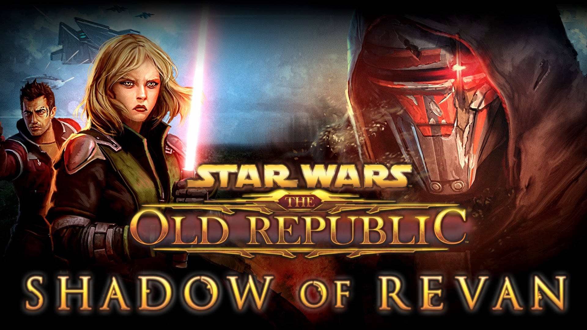

За всю долгую галактическую историю Корусанта тысячами поколений поверхность планеты была превращена в сплошной городской пейзаж. Если смотреть поверх облаков, Корусант кажется спокойным и тихим, виднеются лишь верхушки самых высоких зданий, взмывающих в атмосферу на высоту до 6 километров. Но под облаками на самом деле скрывается галактическая столица — густонаселенный многоуровневый мегаполис, напоминающий гравированный металлический шар.
Татуин — планета-пустыня, вращающаяся вокруг двойной звезды Внешнего Кольца. Татуин считался одной из старейших планет в Галактике и состоит из литого ядра и занимал стратегическое местоположение в связи с пересекающимися несколькими гиперпространственными маршрутами, хотя и находился далеко от центра Галактики и Галактической Республики. Однако, он занимал удачное место для контрабандистов и преступников всех мастей. В результате, Татуин был местом орбитальных разборок различных бандитских группировок, так что поверхность планеты была буквально завалена обломками древних космических кораблей, погребенных под песками пустыни.
Дантуин - красивый мир зеленых равнин, тихих рек и чистых озёр. Планета находилась в секторе Райобалло Внешнего Кольца, но, несмотря на это, Дантуин значительно отстоял от основных торговых маршрутов Галактики. Население Дантуина было незначительным и сильно разбросанным по планете в виде небольших поселений с обширным землевладением. Разумные расы были представлены людьми-фермерами, а также примитивными племенами дантари. Местные животные: собаки кат, ириазы, кинраты, граулы. Во времена Галактической гражданской войны промышленно развитые поселения на Дантуине отсутствовали.
Дромунд-Каас — третья планета в системе Дромунд, бывшая столица Старой Империи, позже — восстановленной Империи, и место обитания Пророков тёмной стороны. В их Храме Тёмной Силы концентрировалось такое количество энергии тёмной стороны, что большинство оружия, не считая светового меча, переставало функционировать. На протяжении тысячелетий местоположение Дромунд-Каас было известно лишь очень немногим, избранным лордам ситхов, что позволило планете избежать общественного внимания.
Раката-Прайм – тропический мир в удалённом и относительно малоизученном уголке Галактики, известном под названием Тихие пустоши — большом пустом пространстве космоса. Значительная часть планеты была покрыта океаном с разбросанными в нём многочисленными островками и архипелагами. Планета являлась единственной в системе Лехон, но находилась на одной орбите со «Звёздной кузницей», древней ракатанской космической станцией, получавшей энергию напрямую от центральной звезды.
Явин-4 — четвёртый спутник газового гиганта Явин, пригодный для жизни, с бурной тропической природой. Спутник стал «центром» в галактической многотысячелетней истории и повидал огромное количество галактических битв и сражений. Первоначально спутник стал пристанищем тёмного лорда ситхов Наги Садоу и его приспешников. Люди Садоу, превратившиеся в смертоносных воинов-массасси, построили храмы посреди джунглей спутника. Явин-4 стал свидетелем подъёма и падения тёмного джедая Экзара Куна, а также являлся местом размещения тайной базы повстанцев, при обороне которой была уничтожена первая «Звезда Смерти». Впоследствии на спутнике Люком Скайуокером была учреждена Академия джедаев, известная как Праксеум. После этого Явин-4 неоднократно являлся целью для нападения. Последнее такое нападение, предпринятое юужань-вонгами, заставило джедаев покинуть спутник.